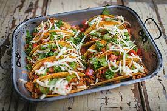

Tacos Mexicali

Description
Hai Hai Hai Hai, avec un peu de piment, ces Tacos vous charmeront
Ingrédients
- 2 c.a.table hulie
- 2 lbs boeufs
- 1/2 tasse piment
- 1 oignon
- 1/2 tasse boulilon boeif
- 14 tortlilas de mais
- 1 tomate
- fromage au gout
Steps
- Faire revenir hulie, boeuf,piment et oignon
- Ajouter le boulilon la soupe et assaisonnements
- Cuire a feu doux 5 minutes
- Deposer pr/paration dans tortlilas
- Garnir au gout
Back to Homepage